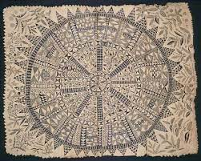

219. Hiapo (tapa). Niue. c. 1850–1900 C.E. Tapa or bark cloth, freehand painting.
- Form
- tapa is cloth made from tree bark; the pieces are beaten and pasted together
- using stencils, the artist dye the exposed parts of the tapa with paint
- after the tapa is dry, designs are sometimes repainted to enhance the effect
- traditionally worn as clothing before the importance of cotton
- Content
- Hiapo is the word used in Niue for “tapa” or “bark cloth”
- tapa is cloth made from tree bark; the pieces are beaten and pasted together
- traditionally worn as clothing before the importance of cotton
- Tapa
- take on a special meaning
- commemorating an event
- honoring a chief
- noting a series of ancestors